This tutorial discusses the solution of the classical Bretherton problem in which an air-finger is driven steadily into a 2D fluid-filled, rigid-walled channel.
The driver code listed below was originally developed as a test-bed for the paper
in which we studied the elastic-walled equivalent, paying particular attention to the effect of transverse gravity which plays quite an important role in this problem.
Compared to other tutorials, there is no detailed discussion of the driver code itself because the implementation is somewhat messy. However, given that the driver code is (of course!) very well documented you should be able to figure out what's going on once you've read through the discussion of the problem formulation and our brief comments on the Implementation. Get in touch if you need more information.
The sketch below shows the problem setup: An (inviscid) air finger propagates at a steady speed  into a 2D rigid-walled, fluid-filled channel of half-width 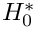. In the process it displaces some of the viscous fluid (of density
into a 2D rigid-walled, fluid-filled channel of half-width 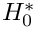. In the process it displaces some of the viscous fluid (of density  , viscosity
, viscosity  and surface tension ) and deposits a film of thickness 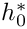 on the channel walls. [Note that, for the sake of simplicity, we ignore the effect of transverse gravity in this discussion; the driver code listed below allows the specification of a gravitational body force which will break the up-down symmetry of the solution.]
and surface tension ) and deposits a film of thickness 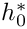 on the channel walls. [Note that, for the sake of simplicity, we ignore the effect of transverse gravity in this discussion; the driver code listed below allows the specification of a gravitational body force which will break the up-down symmetry of the solution.]
where the Reynolds number is defined as 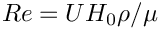. On the free fluid surface, whose outer unit normal we denote by  , the fluid normal velocity vanishes,
, the fluid normal velocity vanishes,
is then determined by overall continuity.
and here is a comparison of the computational predictions for the bubble pressure and film thickness against Bretherton's famous asymptotic predictions (valid only for small capillary numbers!):
The discretisation of the problem is reasonably straightforward, the most (human-)time-consuming part being the creation of the spine mesh, discussed in another tutorial. The real complication arises from the fact that the application of the "inflow condition" (1) at the right end of the domain – superficially a Dirichlet condition for the velocity – depends on the non-dimensional film thickness at the left end of the domain. This introduces a non-local interaction between these degrees of freedom. We handle this by providing a templated wrapper class BrethertonElement (templated by the type of the "wrapped" fluid element) which allows the specification of the film thickness as external Data (i.e. Data whose values affect the element's residuals but are not determined by the element; see the discussion of oomph-lib's various types of elemental Data in the "bottom up" discussion of the library's data structure). Read the driver code listed below to see how it works!
#include<algorithm>
#include "generic.h"
#include "navier_stokes.h"
#include "fluid_interface.h"
#include "meshes/bretherton_spine_mesh.h"
using namespace std;
{
void inflow(
const Vector<double>& x, Vector<double>& veloc)
{
#ifdef PARANOID
std::ostringstream error_stream;
bool throw_error=false;
{
error_stream << "You must set H_lo_pt\n";
throw_error = true;
}
{
error_stream << "You must set H_up_pt\n";
throw_error = true;
}
{
error_stream << "You must set Y_lo_pt\n";
throw_error = true;
}
{
error_stream << "You must set Y_up_pt\n";
throw_error = true;
}
if(throw_error)
{
throw OomphLibError(error_stream.str(),
OOMPH_CURRENT_FUNCTION,
OOMPH_EXCEPTION_LOCATION);
}
#endif
double C =6.0*(2.0*h_av+y_lo-y_up)/
(y_up*y_up*y_up-y_lo*y_lo*y_lo-h_av*y_up*
y_up*y_up+h_av*y_lo*y_lo*y_lo-3.0*y_lo*y_up*y_up+
3.0*y_lo*y_lo*y_up+3.0*y_lo*y_up*y_up*h_av-3.0*y_lo*y_lo*y_up*h_av);
double y=x[1];
veloc[0]=-1.0+C*(1.0-h_av)*((y_lo-y)*(y_up-y));
veloc[1]=0.0;
}
}
template<class ELEMENT>
{
public:
typedef void (*
InflowFctPt)(
const Vector<double>& x, Vector<double>& veloc);
const Vector<Data*>& inflow_ext_data,
const unsigned& inflow_boundary,
{
unsigned n_ext=inflow_ext_data.size();
for (unsigned i=0;i<n_ext;i++)
{
}
}
{
ELEMENT::assign_local_eqn_numbers(store_local_dof_pt);
unsigned local_eqn_count = this->ndof();
unsigned max_nvalue=0;
for (unsigned i=0;i<n_ext;i++)
{
unsigned n_val=data_pt->nvalue();
if (n_val>max_nvalue) max_nvalue=n_val;
}
std::deque<unsigned long> global_eqn_number_queue;
for (unsigned i=0;i<n_ext;i++)
{
unsigned n_val=data_pt->nvalue();
for (unsigned ival=0;ival<n_val;ival++)
{
long eqn_number=data_pt->eqn_number(ival);
if (eqn_number>=0)
{
global_eqn_number_queue.push_back(eqn_number);
local_eqn_count++;
}
else
{
}
}
}
this->add_global_eqn_numbers(global_eqn_number_queue,
GeneralisedElement::Dof_pt_deque);
}
DenseMatrix<double>& jacobian)
{
ELEMENT::get_jacobian(residuals,jacobian);
if (n_ext==0) return;
Vector<double> residuals_plus(residuals.size());
double fd_step=1.0e-8;
for (unsigned i=0;i<n_ext;i++)
{
unsigned n_val=data_pt->nvalue();
for (unsigned ival=0;ival<n_val;ival++)
{
if (local_eqn>=0)
{
double *value_pt = data_pt->value_pt(ival);
double backup = *value_pt;
*value_pt += fd_step;
unsigned n_dof = this->ndof();
for(unsigned idof=0;idof<n_dof;idof++) {residuals_plus[idof] = 0.0;}
this->get_residuals(residuals_plus);
for(unsigned idof=0;idof<n_dof;idof++)
{
jacobian(idof,local_eqn)=
(residuals_plus[idof]-residuals[idof])/fd_step;
}
*value_pt = backup;
}
}
}
}
private:
{
Vector<double> x(2);
Vector<double> veloc(2);
unsigned n_nod = this->nnode();
for (unsigned j=0;j<n_nod;j++)
{
Node* nod_pt = this->node_pt(j);
{
#ifdef PARANOID
for (unsigned i=0;i<2;i++)
{
if (nod_pt->eqn_number(0)>=0)
{
std::ostringstream error_stream;
error_stream
<< "We're assigning a Dirichlet condition for the "
<< i << "-th "
<< "velocity, even though it is not pinned!\n"
<< "This can't be right! I'm bailing out..."
<< std::endl;
throw OomphLibError(error_stream.str(),
OOMPH_CURRENT_FUNCTION,
OOMPH_EXCEPTION_LOCATION);
}
}
#endif
x[0]=nod_pt->x(0);
x[1]=nod_pt->x(1);
nod_pt->set_value(0,veloc[0]);
nod_pt->set_value(1,veloc[1]);
}
}
}
};
{
template<>
class FaceGeometry<
BrethertonElement<SpineElement<QCrouzeixRaviartElement<2> > > >:
public virtual QElement<1,3>
{
public:
FaceGeometry() : QElement<1,3>() {}
};
template<>
class FaceGeometry<
BrethertonElement<SpineElement<QTaylorHoodElement<2> > > >:
public virtual QElement<1,3>
{
public:
FaceGeometry() : QElement<1,3>() {}
};
template<>
SpineElement<QCrouzeixRaviartElement<2> > > > >: public virtual PointElement
{
public:
FaceGeometry() : PointElement() {}
};
template<>
class FaceGeometry<FaceGeometry<
BrethertonElement<SpineElement<QTaylorHoodElement<2> > > > >:
public virtual PointElement
{
public:
FaceGeometry() : PointElement() {}
};
}
template<class ELEMENT>
{
public:
{
unsigned ibound=1;
unsigned num_nod=mesh_pt()->nboundary_node(ibound);
Vector<double> x(2);
Vector<double> veloc(2);
for (unsigned inod=0;inod<num_nod;inod++)
{
x[0]=mesh_pt()->boundary_node_pt(ibound,inod)->x(0);
x[1]=mesh_pt()->boundary_node_pt(ibound,inod)->x(1);
mesh_pt()->boundary_node_pt(ibound,inod)->set_value(0,veloc[0]);
mesh_pt()->boundary_node_pt(ibound,inod)->set_value(1,veloc[1]);
}
}
const double &pvalue)
{
}
private:
BrethertonSpineMesh<ELEMENT,SpineLineFluidInterfaceElement<ELEMENT> >*
};
template<class ELEMENT>
{
unsigned nx1=24;
unsigned nx2=6;
unsigned nx3=12;
unsigned nhalf=4;
unsigned nh=3;
double h=0.1;
GeomObject* lower_wall_pt=new StraightLine(-1.0);
GeomObject* upper_wall_pt=new StraightLine( 1.0);
double xi0=-4.0;
double xi1=1.5;
double xi2=5.0;
Bulk_mesh_pt = new BrethertonSpineMesh<ELEMENT,
SpineLineFluidInterfaceElement<ELEMENT> >
(nx1,nx2,nx3,nh,nhalf,h,lower_wall_pt,upper_wall_pt,xi0,0.0,xi1,xi2);
mesh_pt()=Bulk_mesh_pt;
Control_element_pt=Bulk_mesh_pt->control_element_pt();
Bulk_mesh_pt->spine_pt(0)->spine_height_pt()->value_pt(0);
unsigned last_spine=Bulk_mesh_pt->nfree_surface_spines()-1;
Bulk_mesh_pt->spine_pt(last_spine)->spine_height_pt()->value_pt(0);
unsigned ibound=1;
Bulk_mesh_pt->boundary_node_pt(ibound,0)->x_pt(0,1);
unsigned nnod=Bulk_mesh_pt->nboundary_node(ibound);
Bulk_mesh_pt->boundary_node_pt(ibound,nnod-1)->x_pt(0,1);
activate_inflow_dependency();
for(unsigned ibound=0;ibound<=2;ibound++)
{
unsigned num_nod=mesh_pt()->nboundary_node(ibound);
for (unsigned inod=0;inod<num_nod;inod++)
{
mesh_pt()->boundary_node_pt(ibound,inod)->pin(0);
mesh_pt()->boundary_node_pt(ibound,inod)->pin(1);
}
}
for(unsigned ibound=3;ibound<=5;ibound+=2)
{
unsigned num_nod=mesh_pt()->nboundary_node(ibound);
for (unsigned inod=0;inod<num_nod;inod++)
{
mesh_pt()->boundary_node_pt(ibound,inod)->pin(0);
mesh_pt()->boundary_node_pt(ibound,inod)->pin(1);
}
}
unsigned central_spine=(Bulk_mesh_pt->nfree_surface_spines()-1)/2;
Bulk_mesh_pt->spine_pt(central_spine)->spine_height_pt()->pin(0);
for (unsigned ibound=0;ibound<=2;ibound+=2)
{
unsigned num_nod=mesh_pt()->nboundary_node(ibound);
for (unsigned inod=0;inod<num_nod;inod++)
{
mesh_pt()->boundary_node_pt(ibound,inod)->set_value(0,-1.0);
mesh_pt()->boundary_node_pt(ibound,inod)->set_value(1, 0.0);
}
}
for (unsigned ibound=3;ibound<=5;ibound+=2)
{
unsigned num_nod=mesh_pt()->nboundary_node(ibound);
for (unsigned inod=0;inod<num_nod;inod++)
{
mesh_pt()->boundary_node_pt(ibound,inod)->set_value(0,-1.0);
mesh_pt()->boundary_node_pt(ibound,inod)->set_value(1, 0.0);
}
}
unsigned n_bulk=Bulk_mesh_pt->nbulk();
for(unsigned i=0;i<n_bulk;i++)
{
ELEMENT *el_pt = dynamic_cast<ELEMENT*>(Bulk_mesh_pt->
bulk_element_pt(i));
}
unsigned interface_element_pt_range = Bulk_mesh_pt->ninterface_element();
for(unsigned i=0;i<interface_element_pt_range;i++)
{
SpineLineFluidInterfaceElement<ELEMENT>* el_pt =
dynamic_cast<SpineLineFluidInterfaceElement<ELEMENT>*>
(Bulk_mesh_pt->interface_element_pt(i));
}
Bulk_mesh_pt->node_update();
cout << "Number of unknowns: " << assign_eqn_numbers() << std::endl;
}
template<class ELEMENT>
{
Vector<Data*> outflow_spines(2);
outflow_spines[0]=Bulk_mesh_pt->spine_pt(0)->spine_height_pt();
unsigned last_spine=Bulk_mesh_pt->nfree_surface_spines()-1;
outflow_spines[1]=Bulk_mesh_pt->spine_pt(last_spine)->spine_height_pt();;
unsigned ibound=1;
unsigned nel=Bulk_mesh_pt->nboundary_element(ibound);
for (unsigned e=0;e<nel;e++)
{
ELEMENT* el_pt=dynamic_cast<ELEMENT*>(Bulk_mesh_pt->
boundary_element_pt(ibound,e));
el_pt->activate_inflow_dependency_on_external_data(
}
}
template<class ELEMENT>
{
ofstream some_file;
char filename[100];
unsigned npts=5;
Vector<double> s(2);
s[0]=1.0;
s[1]=1.0;
unsigned last_spine=Bulk_mesh_pt->nfree_surface_spines()-1;
Trace_file << " " << Bulk_mesh_pt->spine_pt(0)->height();
Trace_file << " " << Bulk_mesh_pt->spine_pt(last_spine)->height();
Trace_file << " " << -Control_element_pt->interpolated_p_nst(s)*
Trace_file << " " << Control_element_pt->interpolated_u_nst(s,0);
Trace_file << " " << Control_element_pt->interpolated_u_nst(s,1);
Trace_file << std::endl;
snprintf(filename, sizeof(filename), "%s/soln%i.dat",doc_info.directory().c_str(),
doc_info.number());
some_file.open(filename);
Bulk_mesh_pt->output(some_file,npts);
some_file.close();
snprintf(filename, sizeof(filename), "%s/boundaries%i.dat",doc_info.directory().c_str(),
doc_info.number());
some_file.open(filename);
Bulk_mesh_pt->output_boundaries(some_file);
some_file.close();
}
template<class ELEMENT>
{
Problem::Max_residuals=500.0;
DocInfo doc_info;
doc_info.set_directory("RESLT");
doc_info.number()=0;
char filename[100];
snprintf(filename, sizeof(filename), "%s/trace.dat",doc_info.directory().c_str());
Trace_file.open(filename);
Trace_file << "VARIABLES=\"Ca\",";
Trace_file << "\"h<sub>bottom</sub>\",\"h<sub>too</sub>\",";
Trace_file << "\"h<sub>Bretherton</sub>\",\"p<sub>tip</sub>\",";
Trace_file << "\"p<sub>tip (Bretherton)</sub>\",\"u<sub>stag</sub>\",";
Trace_file << "\"v<sub>stag</sub>\"";
Trace_file << "\"<greek>a</greek><sub>bottom</sub>\",";
Trace_file << "\"<greek>a</greek><sub>top</sub>\"";
Trace_file << std::endl;
double factor=2.0;
doc_solution(doc_info);
for (unsigned step=1;step<=nsteps;step++)
{
cout << std::endl << "STEP " << step << std::endl;
double maxres = Problem::Max_residuals;
while (true)
{
cout << "Checking max. res for Ca = "
DoubleVector residuals;
actions_before_newton_solve();
actions_before_newton_convergence_check();
get_residuals(residuals);
double max_res=residuals.max();
cout << max_res;
if (max_res>maxres)
{
cout << ". Too big!" << std::endl;
factor=1.0+(factor-1.0)/1.5;
cout << "New reduction factor: " << factor << std::endl;
continue;
}
else
{
cout << ". OK" << std::endl << std::endl;
break;
}
}
cout << "Solving for capillary number: "
newton_solve();
doc_info.number()++;
doc_solution(doc_info);
}
}
int main(
int argc,
char* argv[])
{
CommandLineArgs::setup(argc,argv);
problem.self_test();
unsigned nstep;
if (CommandLineArgs::Argc>1)
{
nstep=2;
}
else
{
nstep=30;
}
}
int main(int argc, char *argv[])
Driver code for unsteady two-layer fluid problem. If there are any command line arguments,...
"Bretherton element" is a fluid element (of type ELEMENT) for which the (inflow) velocity at those no...
unsigned Inflow_boundary
Number of the inflow boundary in the global mesh.
void(* InflowFctPt)(const Vector< double > &x, Vector< double > &veloc)
Typedef for pointer (global) function that specifies the the inflow.
void assign_local_eqn_numbers(const bool &store_local_dof_pt)
Overload assign local equation numbers: Add the dependency on the external Data that affects the infl...
void activate_inflow_dependency_on_external_data(const Vector< Data * > &inflow_ext_data, const unsigned &inflow_boundary, InflowFctPt inflow_fct_pt)
Activate the dependency of the "inflow" on the external data. Pass the vector of pointers to the exte...
InflowFctPt Inflow_fct_pt
Function pointer to the global function that specifies the inflow velocity profile on the global mesh...
void reassign_inflow()
For all nodes that are located on specified boundary re-assign the inflow velocity,...
Vector< Data * > Inflow_ext_data
Storage for the external Data that affects the inflow.
void get_jacobian(Vector< double > &residuals, DenseMatrix< double > &jacobian)
Overloaded Jacobian computation: Computes the Jacobian of the underlying element and then adds the FD...
BrethertonElement()
Constructor: Call the constructor of the underlying element.
DenseMatrix< int > Inflow_ext_data_eqn
Storage for the local equation numbers associated the Data values that affect the inflow.
void activate_inflow_dependency()
Activate the dependency of the inflow velocity on the spine heights at the outflow.
BrethertonProblem()
Constructor:
void actions_after_newton_solve()
Update after solve can remain empty, because the update is performed automatically after every Newton...
void actions_before_newton_convergence_check()
Spine heights/lengths are unknowns in the problem so their values get corrected during each Newton st...
void actions_before_newton_solve()
Update before solve: empty.
void fix_pressure(const unsigned &e, const unsigned &l, const double &pvalue)
Fix pressure value l in element e to value p_value.
ELEMENT * Control_element_pt
Pointer to control element.
void doc_solution(DocInfo &doc_info)
Doc the solution.
void parameter_study(const unsigned &nsteps)
Run a parameter study; perform specified number of steps.
ofstream Trace_file
Trace file.
BrethertonSpineMesh< ELEMENT, SpineLineFluidInterfaceElement< ELEMENT > > * Bulk_mesh_pt
Pointer to bulk mesh.
Namepspace for global parameters.
double ReSt
Womersley = Reynolds times Strouhal.
void inflow(const Vector< double > &x, Vector< double > &veloc)
Set inflow velocity, based on spine heights at outflow and channel width at inflow.
double * H_lo_pt
Pointer to film thickness at outflow on the lower wall.
Vector< double > G(2)
Direction of gravity.
double * Y_up_pt
Pointer to y-position at inflow on the upper wall.
double * H_up_pt
Pointer to film thickness at outflow on the upper wall.
double * Y_lo_pt
Pointer to y-position at inflow on the lower wall.
double Ca
Capillary number.
double ReInvFr
Product of Reynolds and Froude number.
double Re
Reynolds number.
![\[
\frac{\partial u_i}{\partial x_i}=0,
\]](form_8.png)
 relative to the bubble pressure 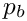. Then the dynamic boundary condition implies that
relative to the bubble pressure 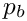. Then the dynamic boundary condition implies that  is a non-dimensional measure of the bubble velocity. The no-slip condition on the channel walls requires that 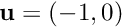 at 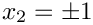. Far behind the bubble tip, the fluid remains stationary on the walls. In the moving frame of reference, this corresponds to the plug flow profile 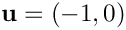 as 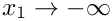. The residual film thickness 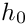 has to be determined as part of the solution and it determines the volume flux through the system. The Poiseuille velocity profile far ahead of the bubble tip,
is a non-dimensional measure of the bubble velocity. The no-slip condition on the channel walls requires that 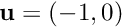 at 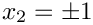. Far behind the bubble tip, the fluid remains stationary on the walls. In the moving frame of reference, this corresponds to the plug flow profile 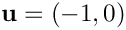 as 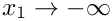. The residual film thickness 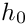 has to be determined as part of the solution and it determines the volume flux through the system. The Poiseuille velocity profile far ahead of the bubble tip,